Pastor, conductor y guerrillero. «Fortuna» para los suyos del monte. Un hombre bueno al que la historia convirtió en mito.
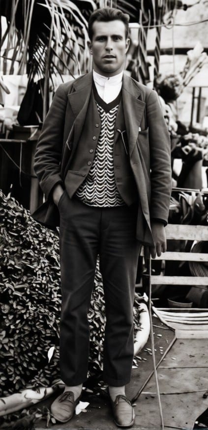
Basiliso Serrano Valero · El Manco de La Pesquera
1908 · Una cuna junto al Molinillo
En el seno de una humilde familia, cerca del paraje «El Molinillo», en la casa conocida como «la Cirujana», perteneciente al pueblo conquense de La Pesquera, vio la luz el miércoles 15 de abril de 1908, a las cinco de la tarde, Basiliso Patrocinio Serrano Valero. Sexto hijo, el benjamín del matrimonio formado por el cirujano Francisco Serrano y Rosario Valero, naturales de la provincia de Albacete pero avecindados en La Pesquera desde hacía años.
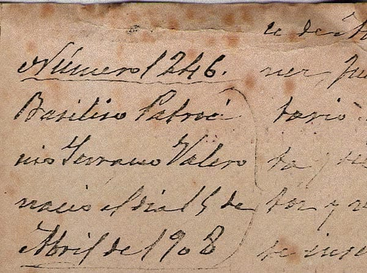
Partida de nacimiento · «Basiliso Patrocinio Serrano Valero nació a 15 de Abril de 1908»
La vida marcó a Basiliso desde sus inicios. La suya era una familia humilde, como la mayoría de sus vecinos, donde la crianza de los hijos se basaba en el arduo trabajo y el esfuerzo. Sin embargo, el destino le deparó un duro golpe cuando, antes de cumplir un año de edad, perdió a su padre. A pesar de las adversidades, Basiliso demostró desde pequeño un carácter fuerte y recio, cualidades que, junto a sus dotes de liderazgo y carisma, lo alejaban del oficio de pastor que, en teoría, le correspondía.
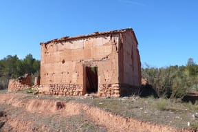
La casa del Manco · El Molinillo, La Pesquera
Entre los imponentes pinares de su pueblo, acompañado únicamente por su rebaño de cabras, Basiliso Serrano dejaba volar su imaginación. Al igual que Miguel Hernández, era un alma inquieta que encontraba refugio en la escritura de versos y la lectura de libros, probablemente clandestinos, que alguien le proporcionaba. Estas lecturas le abrieron las puertas a un mundo nuevo y lleno de posibilidades, donde la pobreza no dictaba el destino. Fue en esa solitaria existencia donde comenzó a germinar en él la semilla de la inconformidad: no podía aceptar un mundo que lo relegaba a ser pastor toda su vida. Su inteligencia y sus anhelos iban mucho más allá.
La llegada de la República
La Segunda República Española marcó un antes y un después en la vida de Basiliso. Se convirtió en un miembro destacado de la CNT en su pueblo, evitando desmanes y reyertas que ensangrentaron otras localidades. Incluso sus enemigos políticos reconocieron su valentía y su papel crucial en la salvación de muchas vidas, entre ellas la del sacerdote Alfonso Bonilla, amigo personal suyo.
«Aquí no sobra nadie, falta pan y faltan brazos, compañeros.»
Basiliso Serrano, en la plaza de La Pesquera, ante los milicianos de la CNT
Estas palabras reflejaban su firme oposición a las purgas que se estaban llevando a cabo, tanto contra destacados derechistas como contra el párroco de su propio pueblo. Basiliso defendía la unidad y la solidaridad, convencido de que la lucha debía enfocarse en construir un futuro mejor para todos.
1933 · Basiliso y Rufina
El 23 de abril de 1933, en su pueblo natal, Basiliso Serrano contrajo matrimonio con Rufina Monteagudo Ponce. La fotografía de la boda nos regala un instante de felicidad en medio de la convulsa época que se avecinaba.
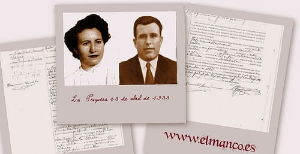
Basiliso y Rufina Monteagudo Ponce · La Pesquera, 1933
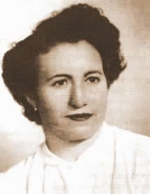
Rufina Monteagudo Ponce · sufrió el acoso de la Guardia Civil durante la clandestinidad de su marido
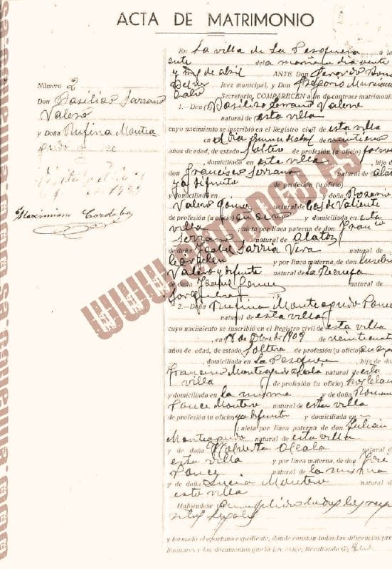
Expediente de matrimonio · documentación familiar
1936 · La guerra
Al irrumpir la Guerra Civil Española, Basiliso no dudó en tomar las armas en defensa de la libertad y la democracia que representaba la República. Luchó con convicción, dejando atrás sus sueños e ilusiones personales por un ideal más grande: la construcción de una sociedad justa y equitativa.
Su compromiso con la causa republicana no se limitó al campo de batalla. Basiliso puso al servicio de la lucha su ingenio y sus habilidades mecánicas, conduciendo un camión en algún lugar de la contienda. Su labor fue crucial para el transporte de suministros y el traslado de tropas. Un ejemplo de su solidaridad fue la hazaña de traer un camión de harina a Pajazo, un paraje de su pueblo: en plena escasez, Basiliso arriesgó su vida para garantizar el sustento de sus vecinos. Este acto de generosidad lo convirtió en un héroe local y le granjeó el respeto y la admiración de toda la comunidad.
1945 · La firma en el árbol
Tras la amarga derrota republicana, Basiliso se vio obligado a vivir en la semiclandestinidad, refugiándose en las escarpadas Hoces del Cabriel. En este entorno agreste, entre el fragor del río y el susurro de la brisa, Basiliso dejó un mensaje imborrable en la corteza de un árbol: «LO ESCRIBIO BASILISO SERANO (falta una R) NATURAL DE LA PESQUERA». Junto a la inscripción, la fecha de 1945 y un dibujo de un animal completan este testimonio de un hombre que no se resignaba al olvido.
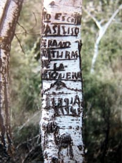
«Lo escribió Basiliso Serano, natural de La Pesquera» · Hoces del Cabriel, 1945
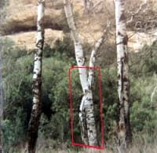
Testimonio en la corteza · fotos de L. Carrasco
No solo luchaba por su propia supervivencia, sino también por proteger a su familia de la crueldad del régimen franquista. La Guardia Civil acosaba a sus seres queridos, especialmente a su esposa, su hermana y su sobrino Paco, quien, harto de las torturas y palizas, decidió unirse a Basiliso en la clandestinidad.
El mensaje en el árbol no es solo una firma: es un grito de rebeldía contra la injusticia. Es la huella de un hombre que, a pesar de las adversidades, no perdía la esperanza de un futuro mejor.
1946 · Nace «Fortuna»
El 15 de febrero de 1946, la vida de Basiliso dio un giro radical. Un encuentro fortuito con una partida guerrillera en las inmediaciones de su pueblo natal lo llevó a tomar una decisión trascendental: unirse a la lucha contra el régimen franquista. A partir de ese momento, «Fortuna», como lo apodaron sus compañeros, se convirtió en un símbolo de resistencia.
Durante siete años, Basiliso y sus camaradas mantuvieron en jaque a las fuerzas represivas en los montes. Su tenacidad y valentía impidieron la normalización de un régimen nacido de la violencia y la injusticia.
En el libro Los guerrilleros de Levante y Aragón, de Salvador F. Cava, se relata con detalle la trayectoria de Basiliso y sus compañeros. En el primer semestre de 1946, el grupo de Requena, al que se unió Basiliso, se dedicó a consolidarse, creando lazos, estableciendo campamentos y reclutando nuevos guerrilleros. Una de las acciones más destacadas fue el asalto al pagador de las obras de la central eléctrica del Pajazo, en La Pesquera, operación que marcó el inicio de una etapa de intensa actividad guerrillera en la región.
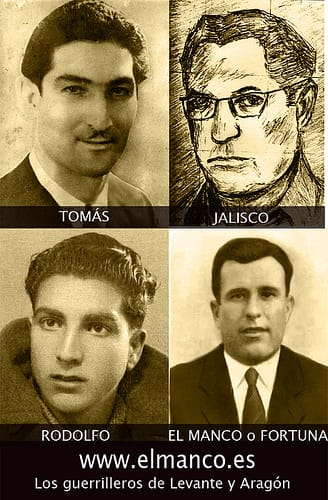
El reencuentro · protagonistas de aquella lucha, años después. Foto del libro «Los guerrilleros de Levante y Aragón», de Salvador F. Cava
El mito de «El Manco de La Pesquera» nació en las montañas, donde este hombre bueno se convirtió en un símbolo de esperanza para los oprimidos. Su leyenda cuenta que robaba a los ricos para repartir entre los pobres, siempre con la justicia social como guía.
1947 · Quebradas del Morrón
El 30 de enero de 1947, en las Quebradas del Morrón, se libró uno de los combates más duros de la historia de la Agrupación Guerrillera de Levante. Murieron cinco guerrilleros y el enlace del pueblo, Andrés Ponce. La tragedia quedó conocida como la masacre de La Pesquera.
El 27 de abril de 1952, cuando Basiliso preparaba su evacuación a Francia, fue capturado por la Guardia Civil en Cortes de Pallás (Valencia). A pesar de las torturas y el encarcelamiento, nunca flaqueó su espíritu ni sus ideales.
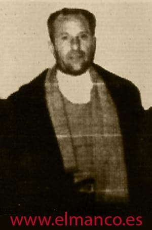
Basiliso Serrano, 1952 · año de su captura. Fotografía publicada en la portada de «Memorias de un luchador antifranquista. De Yecla a Benicalap por las montañas del maquis», de José Navarro Pascual (2009)
1955 · Paterna
Tras su captura, Basiliso fue conducido a Valencia. Allí, en la prisión provincial, fue hospitalizado previamente para curarse de las heridas en la pierna. En algún momento de las requisitorias fue llevado a Cuenca, custodiado por la Guardia Civil, a la antigua comandancia de la calle Colón. La ironía de la historia lo situaba en el corazón del poder que lo perseguía: allí llegó a tomar café en el despacho del gobernador civil de Cuenca, Gabriel Juliá.
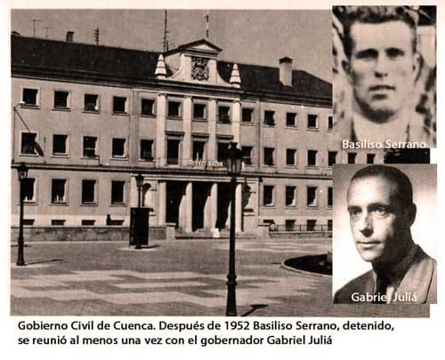
Gobierno Civil de Cuenca · después de 1952, el detenido Basiliso Serrano se reunió al menos una vez con el gobernador Gabriel Juliá
Encarcelado en Valencia, Basiliso afrontó un juicio injusto que culminó con una condena a muerte. El 10 de diciembre de 1955, a las 7:15 de la mañana, en el cuartel militar de Paterna, seis guardias civiles, bajo las órdenes de su capitán, segaron la vida de este hombre indomable. Basiliso Serrano Valero moría: el hombre, y nacía el mito.
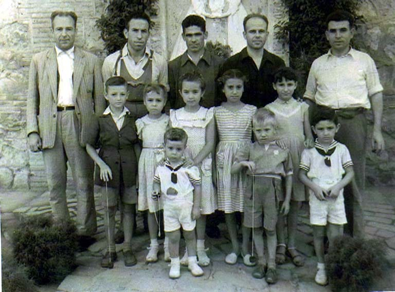
La última foto · septiembre de 1955, prisión provincial de Valencia. Basiliso (izquierda) junto a Fructuoso Soriano «Ricardo» y otros presos políticos de la AGLA. Imagen cedida por José Navarro «Andrés»
Su cuerpo fue enterrado en el nicho 475 del cementerio de Paterna, donde permaneció durante cincuenta años.
2005 · El regreso
En 2005 llegó la justicia. El 9 de diciembre, sus restos fueron exhumados y, al día siguiente, 10 de diciembre —cincuenta años exactos después de su fusilamiento—, Basiliso regresaba a La Pesquera. En una humilde tumba del cementerio de su pueblo encontró el descanso eterno que tanto añelaba.
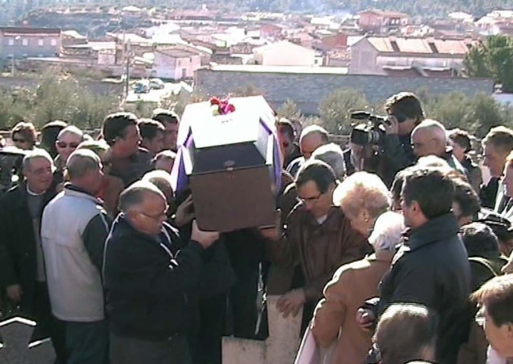
10 de diciembre de 2005 · el pueblo recibe los restos de Basiliso, cincuenta años después de su fusilamiento
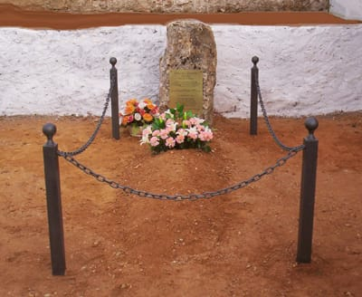
Su tumba · cementerio de La Pesquera
El legado
La muerte de Basiliso no significó el fin de su lucha. Su legado inspiró a generaciones de luchadores por la libertad y la justicia.
En noviembre de 2008, el libro Los Guerrilleros de Levante y Aragón de Salvador F. Cava fue presentado en el Congreso de los Diputados en Madrid, en un acto que sirvió para recordar y honrar la memoria de los guerrilleros antifranquistas.
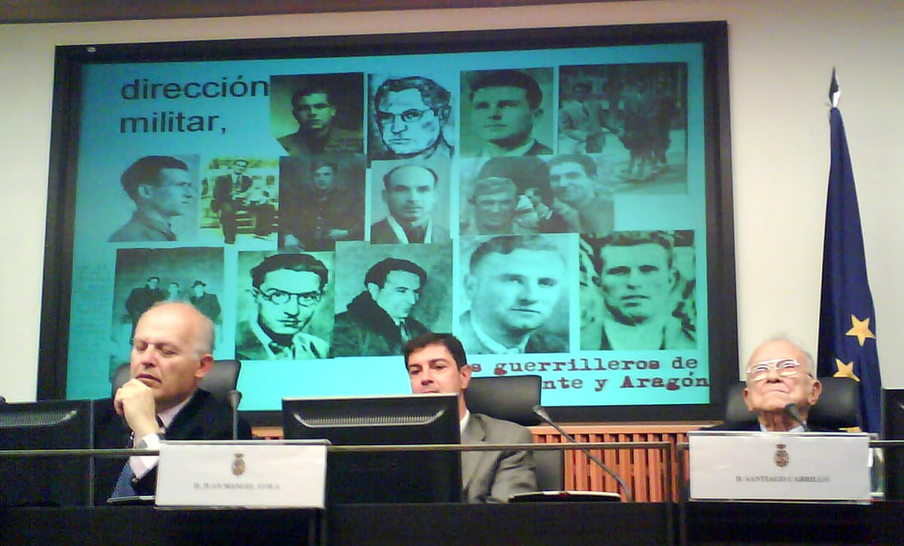
Congreso de los Diputados, 2008 · Eligio Hernández, Juan Ávila y Santiago Carrillo, con una fotografía de guerrilleros al fondo, entre ellos Basiliso
En 2009, una fotografía inédita de 1952 irrumpió en las páginas de la historia como portada de las memorias de su compañero de prisión José Navarro Pascual. Y su memoria sigue viva: exposiciones como la dedicada a sus botas en Valencia mantienen presente su historia.
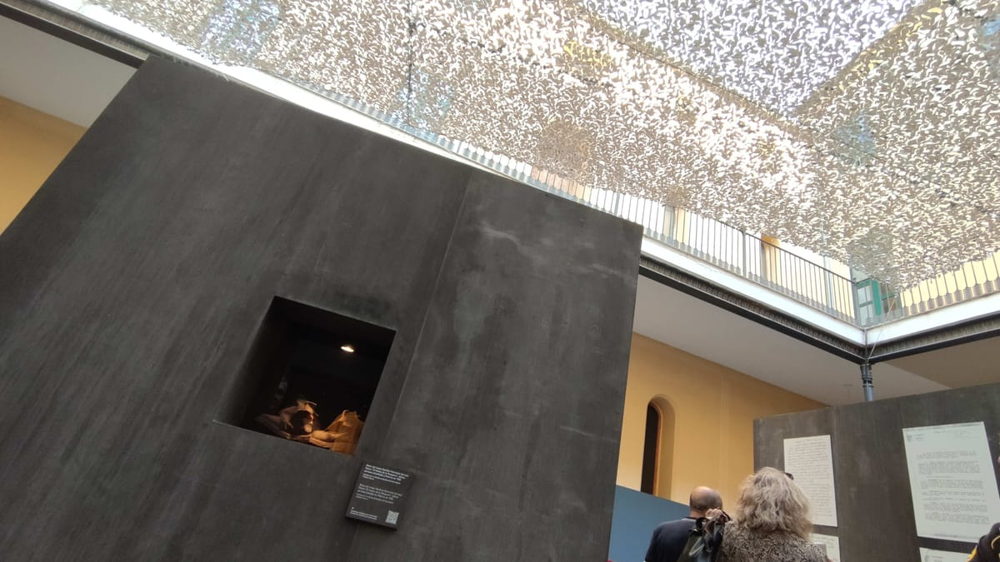
«Botas del maquis Basiliso Serrano Valero» · exposición de memoria histórica, Valencia
2023 · La reparación
El 29 de septiembre de 2023, un nuevo capítulo se escribió en la historia de Basiliso Serrano. El ministro de la Presidencia, Félix Bolaños, firmó el documento de reconocimiento y reparación moral que anula la sentencia de muerte dictada en 1955. La declaración fue entregada a un familiar el 1 de octubre en Santa Cruz de Moya por Diego Blázquez Martín, director general de Memoria Democrática, en presencia de la subdelegada del Gobierno en Cuenca y otras autoridades.
El documento reconoce a Basiliso como víctima de la Guerra Civil y de la dictadura franquista y conlleva el reconocimiento y la reparación moral para él y para los suyos. Un paso importante en la reparación del daño causado por la dictadura, y un reconocimiento de la valentía y el sacrificio de quienes lucharon por la libertad y la justicia.
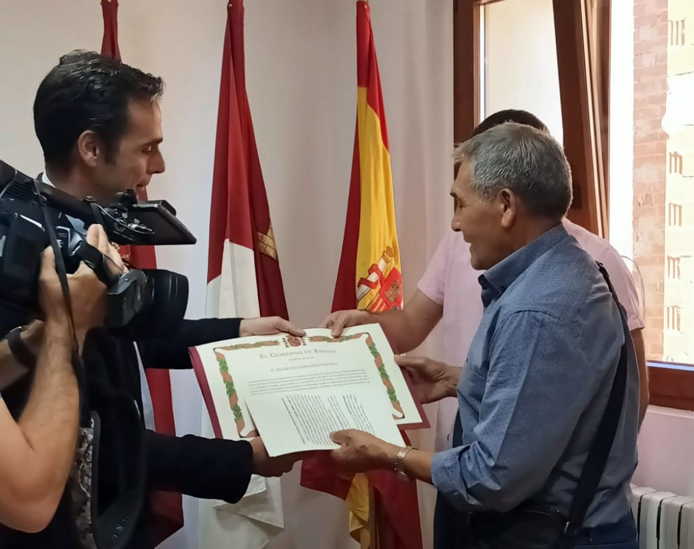
Declaración de reparación y reconocimiento personal · Ministerio de la Presidencia, 29 de septiembre de 2023
El Manco de La Pesquera se convirtió en un símbolo de la resistencia antifranquista y su figura sigue inspirando a las nuevas generaciones en la defensa de los valores democráticos. Su memoria permanece viva.
Versos de Fortuna
Sus poemas
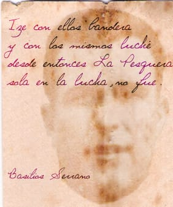
Basiliso · alma inquieta que encontró refugio en los versos
Romance del Manco de La Pesquera
En una barca pesquera en olas
de una mar embravecida
vi la luz por vez primera
en esta mísera vida.
Y lanzada por los vientos
que conduce el egoísmo
conocí los sufrimientos
de este terrible fascismo.
En esta mar encontré
en una dura pelea
y entonces me percaté
que defendía una idea.
Quise orientarme
pues yo quería vencer
y entonces vine a encontrarme
en un nuevo amanecer.
Vi navegar mucha gente
unidos y con amor
que también hacían frente
a ese egoísmo traidor.
Icé con ellos bandera
y con los mismos luché
desde entonces La Pesquera
sola en la lucha no fue.
Estas son las columnas
que conducen a la paz
de aquellas obras tan dignas
que nos legó Carlos Marx.
Vi formar orgullosa
a la masa proletaria
para seguir valerosa
a su jefa Pasionaria.
Esa es nuestra capitana
que va formando en cabeza
con la obra más humana
que se conoce en justeza.
Con inteligencia asombrosa
nos dice: jamás debéis olvidar
que nuestra fuerza es poderosa
conservando la unidad.
Con disciplina consciente,
justeza y sinceridad teniendo
siempre presente
que nuestro lema es luchar.
Y si algún día solos os veis
al teneos que orientar
allá tenéis al «Crelín»
que sirve de estrella polar
dirigida por Stalin
en la tierra y por la mar.
Allí se vive el amor
sin cadenas ni tiranos,
es un pueblo trabajador
que terminó con los amos.
Nosotros también luchamos
por conseguir el mismo amor
siguiendo a esos hermanos
que es nuestro máximo honor.
¿Veis esta mar embravecida
que al mundo quiere arrancar?
Ya le queda poca vida,
la podemos dominar.
Y si en este oleaje
entre nubes y colores
vi una mujer sin ropaje
y a miles de trabajadores
decir con fuerza y coraje:
¡Esa es mi madre! ¡Es Dolores!
Fortuna
⁂
Entre follajes y veneros
Entre follaje y veneros
tras los últimos puntales,
existen los matorrales
donde viven guerrilleros.
Sin diferencias sociales
pero sí con gran respeto
y con disciplina de razón
levantando su bandera
para vencer la opresión.
Ondeando está gozosa
por ciudades y montañas,
pues ella se encuentra orgullosa
como rosa en la pradera
en ser bandera de España
de la fuerza guerrillera.
Hombres en lucha sin par
vais venciendo al opresor
y al pueblo trabajador
le daréis la libertad.
Deslizándose por oscuras brisas
como las aguas bravías
vais con estrellas y risas
a hacer las centrales trizas
o a los trenes en las vías.
Ajusticiar a un traidor o
frente a la Guardia Civil
chivato o malhechor,
sinvergüenza o persona vil.
Así corréis por la Plana
o empinadas laderas
cundiendo vuestro valor y fama
controlando carreteras,
hablando a los campesinos,
ciudadanos o de aldea.
Y vais corriendo caminos
por defender vuestra idea
de acabar con la Falange,
Franco y su mala ralea.
Les habló a los guerrilleros,
a todas castas sociales
que también son caballeros
aunque estén en los puntales.